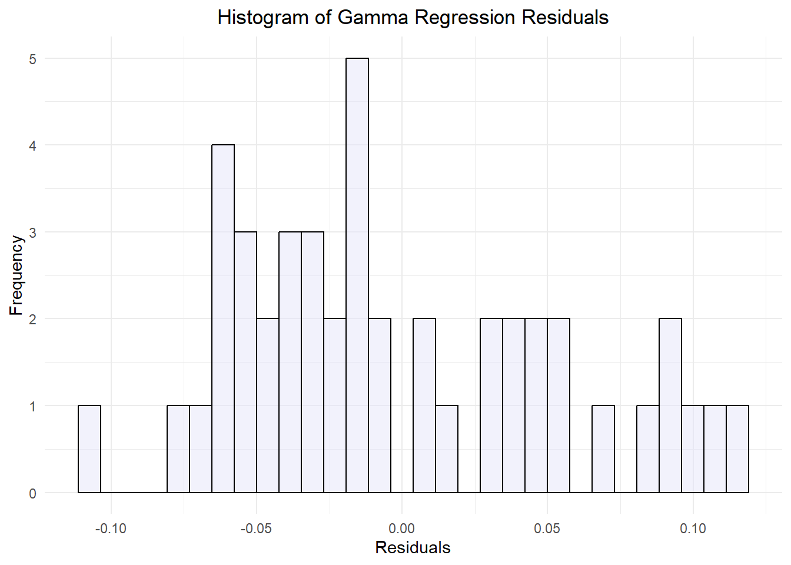
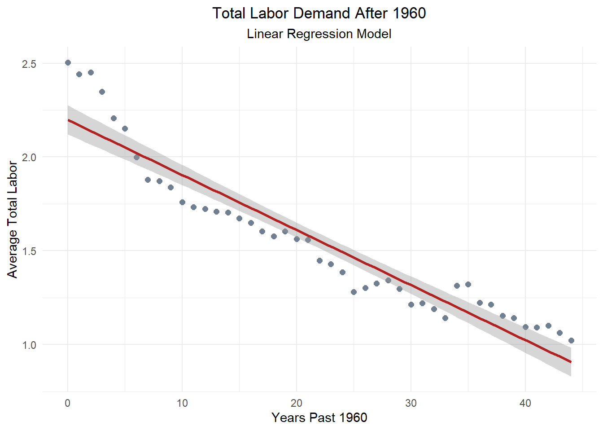

Code
# Load necessary libraries
library(tidyverse)
library(tidyr)
library(here)
library(readxl)
library(patchwork)
library(knitr)
library(kableExtra)
library(gridExtra)The repository for this analysis can be accessed here.
The purpose of this post is to analyze the relationship between annual synthetic inputs in commercial agriculture and corresponding labor demands. It aims to examine the pesticide and fertilizer use by farms in the United States between 1960 and 2004, as well as labor needs over the same parameters, and determine how these factors affect one another.
Most people don’t think much about the work that goes in to producing the food that they eat. I know I didn’t. Like many of us, I grew up disconnected from the source of my food, unaware of the hard work that brings it to our tables. It wasn’t until I became involved in agriculture that I truly understood the effort and resources required to grow the food we often take for granted. Throughout history, labor has consistently been one of the largest expenses in agriculture, both in terms of time and financial investment. From planting and cultivating to harvesting and processing crops, labor is essential to ensuring that food reaches our markets.
I never really considered just how important it was to the economics of a farming operation until I began working for a small organic farm in Santa Cruz County, California. One of my responsibilities was to pay our vendors, and I learned that the cost of inputs—seed, fertilizer, amendments, etc.—was something that farmers are always trying to reduce. It was much harder to reduce labor. In the peak of Summer, our payroll could be nearly twice as much as it was in the Winter! That’s no small fluctuation, and it put a lot of stress on the business to operate smoothly.
I remember my shock when I learned that our crops were not only weeded with a cultivating tractor, but by hand as well. Several times a week, our crew of more than 20 would spend hours pulling weeds in a block of lettuce or scallions. The weeds that grew too close to the crops to be uprooted by the tillage blades of the tractor were a big concern. If they didn’t cull them in time, they would outgrow the crops and the harvest would take much longer, making it cost-ineffective. During the busy Summer months when weeds grow faster and we had tomatoes and strawberries to harvest, we would occasionally lose a block of something and have to cut our losses and till the land, preparing it for a new planting.
Other times, we would be plagued with an onslaught of insects. Flea beetles that would eat holes through our lettuce leaves and blemish our radish greens. Wireworms that tunneled into our carrots and made them bitter. Fruit flies, that would feast on rotting berries and multiply by the millions if furrows weren’t quickly and meticulously cleared of any discarded fruit. One year we couldn’t keep up with the cleaning and the flies became an infestation that curtailed the entire season and spoiled the appetite of some customers. Of course, if we weren’t organic, we would have sprayed for flies and been able to continue to harvest fruit into October. It’s a bitter truth, and it caused me to reflect on conventional farms that use synthetic chemicals to control weeds and pests. No wonder organic produce is so expensive, I’d think. This realization prompted me to consider how the demand for labor in agriculture has evolved, particularly in response to the rising use of synthetic pesticides and fertilizers. I began to wonder: was labor cost minimization due to these inputs the reason large conventional farms were successful, when smaller organic operations seem to come and go?
This curiosity led me to explore the relationship between pesticide and fertilizer use and labor trends in agriculture. In this post, I will examine how the increasing reliance on synthetic chemicals has reshaped labor needs in the U.S.A. since 1960. Using statistical analysis, I will explore how labor costs have changed as farming practices evolved, offering insights into the broader economic and social impacts of these shifts. Through this analysis, I hope to better understand the relationship between these factors, the trajectory of labor in agriculture and the ongoing challenges to success it presents.
To better understand the relationship between pesticides, fertilizers, labor and time, We’ll look at historical data from 1960-2004. This period saw a dramatic rise in these synthetic inputs, so it should allow a good perspective on the relationship. Annual usage data from the US Department of Agriculture will allow us to determine the rate of this change, and annual national labor use data should give us an idea of the effect it had on farms.
We’ll analyze the correlation of these factors over time, which will give us an indication of their relationship. Next, I’ll implement linear regression analysis to determine the effect that pesticide and fertilizer use, and time had on labor needs. The regression model will be the following:
\[ \text{labor} = \beta_0 + \beta_1 \cdot \text{pesticide} + \beta_2 \cdot \text{fertilizer} + \beta_3 \cdot \text{year} + \epsilon \]
The response variable is ‘total_labor’, and represents all forms of labor demand in commercial agriculture operations in the country. The \(\beta\)s represent the regression coefficients, each representing a predictor variable, all of which are continuous. This assumes that there is a linear relationship between ‘total_labor’ and each independent predictor variable.
This model will enable me to assess the extent to which changes in these factors predict the demand in labor. By examining these patterns over time we can attempt to draw conclusions about how the increasing reliance on synthetic chemicals has influenced labor dynamics in agriculture, potentially providing valuable insight into the economic impacts of different farming practices.
Though I don’t believe my variables to be categorical, if linear regression does not yield convincing results, I will turn to gamma analysis. Having a secondary method of analysis may prove valuable if my predictor variables are insufficient to draw conclusions. Trying both models allows me to compare their performance and ensure I’m using the most appropriate approach for my analysis. Herre is an example of a model that I might use:
\[\log(\mathbb{E}[\text{labor}]) = \beta_0 + \beta_1 \cdot \text{pesticide} + \beta_2 \cdot \text{year} + \beta_3 \cdot (\text{pesticide} \times \text{year})\]
Null Hypothesis (H₀): Pesticide and fertilizer use do not have a significant effect on labor demand.
Alternative Hypothesis (H₁): Pesticide and fertilizer use have a significant effect on labor needs.
For this analysis, all data will be sourced from the United States Department of Agriculture (USDA) Economic Research Service.
The labor data comes from a report titled Agricultural productivity in the United States., and contains annual state and U.S. average statistics of agricultural inputs and outputs, including several classifications of labor indices. Indices of labor input were constructed for each State and the aggregate farm sector using the demographically cross-classified hours and compensation data. Labor hours having higher marginal productivity (wages) are given higher weights in forming the index of labor input than are hours having lower marginal productivities. Doing so explicitly adjusts indices of labor input for “quality” change in labor hour.[1] For this analysis, we will focus on the total and hired labor indices, values which are best suited to represent the labor that would be affected by changes in other inputs.
The pesticide and fertilizer data originates from **Fertilizer & Pesticide Use in the United States* summarizing surveyed states annual consumption of material inputs from 1960 to 2004. Indices are a relative to the rate of consumption in Alabama in 1996 based on a value of 1.
The data is formatted as several tables per document with headers and notes, and required reformatting, filtering, and removal of unnecessary summary tables in order to utilize further.
# Load necessary libraries
library(tidyverse)
library(tidyr)
library(here)
library(readxl)
library(patchwork)
library(knitr)
library(kableExtra)
library(gridExtra)These two dataframes are from the same source and have identical structure. First, we have to read in the raw data for our synthetic inputs; Pesticides & Fertilizers. The data is not in a usable format, so we will have to remove anything extraneous. This allows us pivot the dataframe longer so that it’s easier to conduct analysis. We need to find the national average pesticide usage and put that value into a new column. We’ll do the same thing for our fertilizer data below.
# Read in pesticide data
pesticide <- read_excel(here("blog_posts/stats-project/data/pesticide_consumption_state.xls"), skip = 5, range = "A6:AW53")
# Remove rows that are entirely blank
pesticide_clean <- pesticide[rowSums(is.na(pesticide)) < ncol(pesticide), ]
pesticide_tidy <- pesticide_clean %>%
pivot_longer(cols = -Year, # Pivot all columns except Year
names_to = "state", # Create a new column for each state
values_to = "pesticide") %>% # The index values
group_by(Year) %>%
mutate(avg_pesticide = mean(pesticide)) %>% # Create a new column for mean use (National average)
ungroup() %>%
distinct(Year, .keep_all = TRUE) %>% # Remove duplicate rows by year
select(Year, avg_pesticide) # Keep only 'Year' and 'us_avg_pesticide'# Read in fertilizer data
fertilizer <- read_excel(here("blog_posts/stats-project/data/fertilizer_consumption_state.xls"), skip = 5, range = "A6:AW53")
# Remove rows that are entirely blank
fertilizer_clean <- fertilizer[rowSums(is.na(fertilizer)) < ncol(fertilizer), ]
fertilizer_tidy <- fertilizer_clean %>%
pivot_longer(cols = -Year, # Pivot all columns except Year
names_to = "state",# Create a new column for each state
values_to = "fertilizer") %>% # The index values
group_by(Year) %>%
mutate(avg_fertilizer = mean(fertilizer)) %>% # Create a new column for mean use (National average)
ungroup() %>%
distinct(Year, .keep_all = TRUE) %>% # Remove duplicate rows by year
select(Year, avg_fertilizer) # Keep only 'Year' and 'avg_fertilizer'Now we can process our labor data. This information is part of a diverse dataframe that has a lot of information that’s not helpful for us to look at. Let’s simplify it by filtering for observations with ‘labor’ in the title. Next we can pivot the table longer to match the format of our other data, with each attribute having its own column. Since this data is annual, we don’t need to make a new column for annual average. Now that our data is reformatted, we can filter it. We can remove the column for self-employed and family workers because these people would likely work for the farms regardless of changes in pesticide and fertilizer use.
# Read in labor data
labor <- read_csv(here("blog_posts/stats-project/data/labor_etc.csv"))
# Filter rows in the 'labor' data frame where any column contains the word "labor"
filtered_labor <- labor[apply(labor, 1, function(row) any(grepl("labor", row, ignore.case = TRUE))), ]
# Pivot the data so that each attribute becomes its own column
labor_clean <- filtered_labor %>%
pivot_wider(
names_from = Attribute, # The column to spread into multiple columns
values_from = Value # The column to use as the values for each new column
)
# Subset the labor data to keep only total labor index and hired labor index
labor_tidy <- labor_clean[, c("Labor inputs: Total", "Labor inputs: Hired labor", "Year"), drop = FALSE] %>%
select("Year", "Labor inputs: Total", "Labor inputs: Hired labor") %>%
filter(Year >= 1960) %>% # Filter for our area of interest
rename(
avg_total_labor = "Labor inputs: Total", # Rename the column for total labor
avg_hired_labor = "Labor inputs: Hired labor" # Rename the column for hired labor
)We now have three datasets that have similar format and a common column for ‘Year’. Let’s join them together to create a single daatset that we can use for the entire analysis. We’ll also add a column to indicate the amount of years elapsed from the beginning of our data, 1960.
# Merge the pesticide_tidy, fertilizer_tidy, and labor_tidy dataframes by the 'Year' column
combined_tidy <- left_join(pesticide_tidy, fertilizer_tidy, by = "Year") %>%
left_join(labor_tidy, by = "Year")
# Add a column for the time difference between each year and the previous year
combined_tidy <- combined_tidy %>%
mutate(years_elapsed = Year - min(Year))Let’s take a look at our tidy new dataset:
# View the updated dataframe
head(combined_tidy)# A tibble: 6 × 6
Year avg_pesticide avg_fertilizer avg_total_labor avg_hired_labor
<dbl> <dbl> <dbl> <dbl> <dbl>
1 1960 0.218 0.948 2.50 2.12
2 1961 0.247 0.986 2.44 2.12
3 1962 0.270 0.939 2.45 2.11
4 1963 0.279 1.06 2.35 2.11
5 1964 0.298 1.18 2.21 1.90
6 1965 0.296 1.25 2.15 1.79
# ℹ 1 more variable: years_elapsed <dbl>To get a better idea of the usage trends for our synthetic inputs, we can make line graphs with ‘Year’ on the x-axis and the index value on the y-axis. When we display them we can see clearly that both pesticide and fertilizer use has risen dramatically in the U.S. since 1960.
# Plot the trend of pesticide use over time
pest_trend_plot <- ggplot(combined_tidy, aes(x = Year, y = avg_pesticide)) +
geom_line(color = "orange", size = 1.5, alpha = 0.7) + # Add color, size, and transparency
labs(
title = "Average Pesticide Use Over Time",
subtitle = "Trend of U.S. Average Pesticide Use by Year (1960-2004)",
x = "Year",
y = "Average Pesticide Use (Index)",
caption = "Source: U.S. Department of Agriculture, Economic Research Service. " # Caption for data source
) +
theme_minimal() + # Clean background
theme(
text = element_text(size = 12), # Set base font size
axis.title = element_text(face = "bold"), # Bold axis titles
axis.text = element_text(color = "black"), # Color for axis labels
plot.title = element_text(hjust = 0.5, size = 16, face = "bold"), # Centered title with larger font
plot.subtitle = element_text(hjust = 0.5, size = 12), # Centered subtitle
plot.caption = element_text(hjust = 0, size = 10, face = "italic") # Caption style
)
# Plot the trend of pesticide use over time
fert_trend_plot <- ggplot(combined_tidy, aes(x = Year, y = avg_fertilizer)) +
geom_line(color = "darkgreen", size = 1.5, alpha = 0.7) + # Add color, size, and transparency
labs(
title = "Average Fertilizer Use Over Time",
subtitle = " Trend of U.S. Average Fertilizer Use (1960-2004)",
x = "Year",
y = "Average Fertilizer Use (Index)",
caption = "Source: U.S. Department of Agriculture, Economic Research Service. " # Caption for data source
) +
theme_minimal() + # Clean background
theme(
text = element_text(size = 12), # Set base font size
axis.title = element_text(face = "bold"), # Bold axis titles
axis.text = element_text(color = "black"), # Color for axis labels
plot.title = element_text(hjust = 0.5, size = 16, face = "bold"), # Centered title with larger font
plot.subtitle = element_text(hjust = 0.5, size = 12), # Centered subtitle
plot.caption = element_text(hjust = 0, size = 10, face = "italic") # Caption style
)
# Display graphs next to each other
fert_trend_plot + pest_trend_plot + plot_layout(ncol = 2)
Now, let’s determine the trend for our labor variables. We’ll plot them together on the same graph because their scale is the same. When we do we can see that both hired and total labor has decreased precipitously since 1960.
# Plot the trend of labor needs over time
ggplot(combined_tidy, aes(x = Year)) +
geom_line(aes(y = avg_total_labor, color = "Total Labor"), size = 1.5) +
geom_line(aes(y = avg_hired_labor, color = "Hired Labor"), size = 1.5) +
scale_color_manual(values = c("Total Labor" = "blue", "Hired Labor" = "red")) +
labs(
title = "Labor Inputs: Total vs. Hired Labor Over Time",
subtitle = "Trend of U.S. Average Total Labor and Hired Labor Input Indices (1960-2004)",
x = "Year",
y = "Labor Inputs (Index)",
color = "Labor Type" # Legend title
) +
theme_minimal() + # Clean theme
theme(
text = element_text(size = 12), # Set base font size
axis.title = element_text(face = "bold"), # Bold axis titles
axis.text = element_text(color = "black"), # Axis labels color
legend.title = element_text(face = "bold"), # Bold legend title
legend.position = "top", # Position the legend at the top
plot.title = element_text(hjust = 0.5, size = 16, face = "bold"), # Centered plot title with larger font size
plot.subtitle = element_text(hjust = 0.5, size = 12) # Centered subtitle
)To further understand the relationship between each variable, let’s make a correlation matrix. The value for each cell represents \(r\), the correlation coefficient. An \(r\) value ranges from -1 to 1, with 0 indicating no correlation at all. A value of -1 means that the variables are a perfect negative linear relationship, white a value of 1 represents a perfect positive relationship.
# Calculate the correlation matrix
cor_matrix <- cor(combined_tidy[, c("avg_pesticide", "avg_fertilizer", "avg_total_labor", "avg_hired_labor", "years_elapsed")])
# Convert the correlation matrix into a data frame for better table formatting
cor_df <- as.data.frame(cor_matrix)
# Use kable() to display the correlation matrix as a table
kable(cor_df, digits = 2, caption = "Correlation Matrix of Agricultural Inputs & Labor Categories (r)") %>%
kable_styling(bootstrap_options = "striped", full_width = FALSE, position = "center") %>%
column_spec(1:6, background = "white")| avg_pesticide | avg_fertilizer | avg_total_labor | avg_hired_labor | years_elapsed | |
|---|---|---|---|---|---|
| avg_pesticide | 1.00 | 0.82 | -0.93 | -0.87 | 0.98 |
| avg_fertilizer | 0.82 | 1.00 | -0.76 | -0.72 | 0.83 |
| avg_total_labor | -0.93 | -0.76 | 1.00 | 0.96 | -0.95 |
| avg_hired_labor | -0.87 | -0.72 | 0.96 | 1.00 | -0.91 |
| years_elapsed | 0.98 | 0.83 | -0.95 | -0.91 | 1.00 |
Let’s make scatter plots as well to better visualize these relationships and confirm the results from the correlation matrix.
# Pesticide vs Fertilizer Use
cor_plot1 <- ggplot(combined_tidy, aes(x = avg_pesticide, y = avg_fertilizer)) +
geom_point() +
geom_smooth(method = "lm", se = FALSE, color = "cornflowerblue") + # Line of best fit
labs(title = "Pesticide vs Fertilizer Use", x = "Average Pesticide", y = "Average Fertilizer") +
theme_minimal() +
theme(plot.title = element_text(hjust = 0.5))
# Total Labor vs Hired Labor
cor_plot2 <- ggplot(combined_tidy, aes(x = avg_total_labor, y = avg_hired_labor)) +
geom_point() +
geom_smooth(method = "lm", se = FALSE, color = "cornflowerblue") + # Line of best fit
labs(title = "Total Labor vs Hired Labor", x = "Average Total Labor", y = "Average Hired Labor") +
theme_minimal() +
theme(plot.title = element_text(hjust = 0.5))
# Pesticide Use vs Total Labor
cor_plot3 <- ggplot(combined_tidy, aes(x = avg_pesticide, y = avg_total_labor)) +
geom_point() +
geom_smooth(method = "lm", se = FALSE, color = "firebrick") + # Line of best fit
labs(title = "Pesticide Use vs Total Labor", x = "Average Pesticide", y = "Average Total Labor") +
theme_minimal() +
theme(plot.title = element_text(hjust = 0.5))
# Fertilizer Use vs Hired Labor
cor_plot4 <- ggplot(combined_tidy, aes(x = avg_fertilizer, y = avg_hired_labor)) +
geom_point() +
geom_smooth(method = "lm", se = FALSE, color = "firebrick") + # Line of best fit
labs(title = "Fertilizer Use vs Hired Labor", x = "Average Fertilizer", y = "Average Hired Labor") +
theme_minimal() +
theme(plot.title = element_text(hjust = 0.5))
# Arrange all plots in a 2x2 grid
cor_plot1 + cor_plot2 + cor_plot3 + cor_plot4 + plot_layout(ncol = 2)
We can see from these visualizations that pesticide and fertilizer both have a strong positive correlation with each other, and strong negative correlation with both labor variables. The labor variables have exactly the same extremely high correlation with each other, it appears that they are collinear and may not provide distinct results in other analysis. Because they are essentially redundant, they probably won’t be effective in our model.
Let’s revisit the multiple linear regression model previewed earlier and update it with our specific variable names:
\(\text{avg\_total\_labor} = \beta_0 + \beta_1 \cdot \text{avg\_pesticide} + \beta_2 \cdot \text{avg\_fertilizer} + \beta_3 \cdot \text{years\_elapsed} + \epsilon\)
Now we can define the model in more depth given what we’ve learned about our predictor variables. The regression coefficients represent the following:
\(\beta_0\) = Our intercept. The ‘avg_total_labor’ value when all predictor variables are equal to zero.
\(\beta_1\) = The change in ‘avg_total_labor’ for each one unit increase in ‘avg_pesticide’.
\(\beta_2\) = The change in ‘avg_total_labor’ for each one unit increase in ‘avg_fertilizer’.
\(\beta_3\) = The change in ‘avg_total_labor’ for each one unit increase in ‘Year’.
# Make a multi linear regression model predicting total labor
total_labor_model <- lm(avg_total_labor ~ avg_pesticide + avg_fertilizer + years_elapsed, data = combined_tidy)
# Get the summary of the model to interpret the coefficients
total_model_sum <- summary(total_labor_model)We can make a nearly identical model to predict ‘hired_labor’. Let’s do that now so we can test the results together. For this model, the regression coefficients represent the same predictors, but they are predicting ‘avg_hired_labor’ now.
# A separate model predicting avg_total_labor using only avg_hired_labor
hired_labor_model <- lm(avg_hired_labor ~ avg_pesticide + avg_fertilizer + years_elapsed, data = combined_tidy)
# Get the summary of the model to interpret the coefficients
hired_model_sum <- summary(hired_labor_model)Now that we have summaries for both of our models, we can interpret them. To visualize the coefficient better, let’s put the results in a table.
# Extract the summaries for both models
total_labor_summary <- summary(total_labor_model)$coefficients
hired_labor_summary <- summary(hired_labor_model)$coefficients
# Convert to data frames for easier manipulation
total_labor_df <- as.data.frame(total_labor_summary)
colnames(total_labor_df) <- c("Estimate", "Std. Error", "t value", "p-value")
total_labor_df$Variable <- rownames(total_labor_df)
total_labor_df$Model <- "Total Labor"
hired_labor_df <- as.data.frame(hired_labor_summary)
colnames(hired_labor_df) <- c("Estimate", "Std. Error", "t value", "p-value")
hired_labor_df$Variable <- rownames(hired_labor_df)
hired_labor_df$Model <- "Hired Labor"
# Remove row names (index) by resetting the row names to NULL
rownames(total_labor_df) <- NULL
rownames(hired_labor_df) <- NULL
# Print the tables separately
total_labor_table <- kable(total_labor_df[, c("Variable", "Estimate", "Std. Error", "t value", "p-value")],
digits = 3,
caption = "Regression Coefficients for Total Labor Model") %>%
kable_styling(bootstrap_options = "striped", full_width = FALSE, position = "center") %>%
column_spec(1:5, background = "white")
hired_labor_table <- kable(hired_labor_df[, c("Variable", "Estimate", "Std. Error", "t value", "p-value")],
digits = 3,
caption = "Regression Coefficients for Hired Labor Model") %>%
kable_styling(bootstrap_options = "striped", full_width = FALSE, position = "center") %>%
column_spec(1:5, background = "white")
totalR2 <- total_model_sum$r.squared
hiredR2 <- hired_model_sum$r.squared
# Print the tables and R^2
total_labor_table| Variable | Estimate | Std. Error | t value | p-value |
|---|---|---|---|---|
| (Intercept) | 2.095 | 0.088 | 23.837 | 0.000 |
| avg_pesticide | 0.065 | 0.162 | 0.404 | 0.688 |
| avg_fertilizer | 0.096 | 0.078 | 1.236 | 0.224 |
| years_elapsed | -0.035 | 0.008 | -4.381 | 0.000 |
print(paste0("The R^2 for our total labor model is ", round(totalR2, 2), "."))[1] "The R^2 for our total labor model is 0.9."hired_labor_table| Variable | Estimate | Std. Error | t value | p-value |
|---|---|---|---|---|
| (Intercept) | 1.767 | 0.084 | 20.908 | 0.000 |
| avg_pesticide | 0.298 | 0.156 | 1.918 | 0.062 |
| avg_fertilizer | 0.079 | 0.075 | 1.059 | 0.296 |
| years_elapsed | -0.038 | 0.008 | -4.920 | 0.000 |
print(paste0("The R^2 for our hired labor model is ", round(hiredR2, 2), "."))[1] "The R^2 for our hired labor model is 0.85."The \(R^2\) for this model is 0.9, which indicates that it may be a good fit for our data, explaining 90% of the variance. The p-value for both pesticide and fertilizer in this model were much higher than our conventional threshold of \(\alpha\) < 0.05. This means that they are not statistically significant, and there is weak evidence that they affect total labor. The value for year was significant at 0.00, but the number is so low that it may suggest multicollinearity rather than strong significance.
The \(R^2\) for this model is 0.85, which indicates that it, too may be a good fit for our data, explaining 85% of the variance. The p-value for fertilizer in this model was much higher than our conventional threshold of \(\alpha\) < 0.05. Even though pesticide had a value of 0.6, it is still not statistically significant. The value for year was once again 0.00, and our suspicions fo collinearity are reinforced, despite hte strong \(R^2\).
We had assumed that our total labor data was normally distributed but our results are suggesting otherwise. Let’s look at a histogram and a Q-Q plot of the residuals to better visualize the distribution.
# Extract residuals
residuals <- total_labor_model$residuals
# Plot a histogram of residuals to check normality
ggplot(data.frame(residuals), aes(x = residuals)) +
geom_histogram(bins = 30, fill = "cornflowerblue", color = "black", alpha = 0.5) +
labs(title = "Histogram of Residuals", x = "Residuals", y = "Frequency") +
theme_minimal() +
theme(plot.title = element_text(hjust = 0.5)) # Center the title# Make a Q-Q plot to check normality
ggplot(data.frame(residuals), aes(sample = residuals)) +
stat_qq() +
stat_qq_line(color = "slategray", alpha = 0.5) +
labs(title = "Q-Q Plot of Residuals") +
theme_minimal() +
theme(plot.title = element_text(hjust = 0.5)) # Center the titleThese plots indicate that the data produces from our model isn’t normally distributed after all! The histogram appears to be bimodal, with a tail to the right. The Q-Q plot shows that residuals are relatively close to the line of normality near median values, but deviate at both extremes. Both of these results suggest that the data is not normally distributed. We may have omitted variable bias, or perhaps there is a way to fit our model better.
The variance does not appear to be constant across all levels of the predictor variables— the points are much farther from the norm at lower x-values than they are at median or high values. This might mean that our data is heteroscedastic. Heteroscedasticity refers to conditions of a regression analysis when the size of the errors(variance) changes as the predictor variables increase or decrease.
We suspect that our model violates a key assumption of Ordinary Least Squares (OLS) and we should confirm this so we can fit a better model. To test for heteroscedasticity, let’s plot our residuals against the fitted values. If the pattern curves, then our data is heteroscedastic and our model should be revised or abandoned.
# Calculate fitted values and residuals
fitted_values <- fitted(total_labor_model)
residual_values <- residuals(total_labor_model)
# Create a data frame
residuals_df <- data.frame(Fitted = fitted_values, Residuals = residual_values)
# Create the plot
ggplot(residuals_df, aes(x = Fitted, y = Residuals)) +
geom_point() +
geom_hline(yintercept = 0, color = "salmon", linetype = "dashed") +
labs(x = "Fitted Values", y = "Residuals", title = "Residuals vs Fitted Values") +
theme_minimal() +
theme(plot.title = element_text(hjust = 0.5)) # Center the title
It looks like our suspicions were correct. We need to find a new way to analyze this data.
We know that both labor parameters are collinear as well as pesticide & fertilizer. Because it’s a redundant predictor, Let’s drop fertilizer and just focus on pesticide use for this next model. We’ve also learned that the data isn’t normal. To try and normalize the distribution of residuals, we need to transform our data. Though we know the increase in use of pesticides and fertilizers isn’t going to be exponential, the initial plot for their growth trend did somewhat reflect an exponential curve. Let’s try using a Generalized Linear Model (GLM), with a log link function to get a better model fit with a Gamma Regression.
\(\log(\mathbb{E}[\text{avg\_total\_labor}]) = \beta_0 + \beta_1 \cdot \text{avg\_pesticide} + \beta_2 \cdot \text{years\_elapsed} + \beta_3 \cdot (\text{avg\_pesticide} \times \text{years\_elapsed})\)
The regression coefficients for this model represent the following:
\(\beta_0\) = Our intercept. The ‘avg_total_labor’ value when all predictor variables are equal to zero.
\(\beta_1\) = The change in ‘avg_total_labor’ for each one unit increase in ‘avg_pesticide’.
\(\beta_2\) = The change in ‘avg_total_labor’ for each one unit increase in ‘years_elapsed’.
\(\beta_3\) = The quantification of how the effect of ‘avg_pesticide’ use on ‘avg_total_labor’ changes over time (as measured by ‘years_elapsed’).
# Make a Gamma regression model for labor in relation to pesticide and years elapsed
labor_glm <- glm(avg_total_labor ~ avg_pesticide + years_elapsed,
family = Gamma(link = "log"), # Gamma distribution is used for modeling continuous, positive-valued data
data = combined_tidy)Now that we’ve created our new model, let’s see the results. We’ll repeat the steps we took before to find the p-values.
# Extract the summaries for the model
labor_glm_summary <- summary(labor_glm)$coefficients
# Convert to data frames for easier manipulation
labor_glm_df <- as.data.frame(labor_glm_summary)
# Populate the data frame with the variable names and their corresponding values
colnames(labor_glm_df) <- c("Estimate", "Std. Error", "t value", "p-value")
labor_glm_df$Variable <- rownames(labor_glm_df)
labor_glm_df$Model <- "Gamma Labor"
# Remove row names (index) by resetting the row names to NULL
rownames(labor_glm_df) <- NULL
labor_glm_table <- kable(labor_glm_df[, c("Variable", "Estimate", "Std. Error", "t value", "p-value")],
digits = 3,
caption = "Regression Coefficients for Labor Gamma Regression Model") %>%
kable_styling(bootstrap_options = "striped", full_width = FALSE, position = "center") %>%
column_spec(1:5, background = "white")
labor_glm_table| Variable | Estimate | Std. Error | t value | p-value |
|---|---|---|---|---|
| (Intercept) | 0.807 | 0.020 | 41.041 | 0.000 |
| avg_pesticide | 0.069 | 0.071 | 0.964 | 0.341 |
| years_elapsed | -0.022 | 0.003 | -6.353 | 0.000 |
Progress! It looks like our p-value for ‘avg_pesticide’ is roughly half of what our last model produced. This is a meaningless improvement however, as the new value is still statistically insignificant at \(\alpha\) < 0.05 with a value of 0.34. Let’s check to see if this new method produced data that is normal and homoscedastic, using the same methods from before.
# Generate predictions and residuals for avg_total_labor using the gamma model
combined_glm <- combined_tidy %>%
mutate(predicted_labor = predict(labor_glm, type = "response")) %>%
mutate(residuals_glm = residuals.glm(labor_glm))
# Plot a histogram of gamma residuals to check normality
glm_hist_plot <- ggplot(combined_glm, aes(x = residuals_glm)) +
geom_histogram(bins = 30, fill = "lavender", color = "black", alpha = 0.5) +
labs(title = "Histogram of Gamma Regression Residuals", x = "Residuals", y = "Frequency") +
theme_minimal() +
theme(plot.title = element_text(hjust = 0.5)) # Center the title
# Make a Q-Q plot to check normality
glm_qq_plot <- ggplot(combined_glm, aes(sample = predicted_labor)) +
stat_qq() +
stat_qq_line(color = "firebrick", alpha = 0.5) +
labs(title = "Q-Q Plot of Gamma Regression Residuals") +
theme_minimal() +
theme(plot.title = element_text(hjust = 0.5)) # Center the title
# Create the plot
glm_fitted_resdid_plot <- ggplot(combined_glm, aes(x = predicted_labor, y = residuals_glm)) +
geom_point() +
geom_hline(yintercept = 0, color = "tomato", linetype = "dashed") +
labs(x = "Fitted Values", y = "Residuals", title = "Gamma Regression Residuals vs Fitted Values") +
theme_minimal() +
theme(plot.title = element_text(hjust = 0.5)) # Center the title
# Display the graphs
glm_hist_plot
glm_qq_plot
glm_fitted_resdid_plot
After further investigation, it’s clear that this model didn’t produce normally distributed data either. Our histogram of GLM residuals is closer to a normal distribution, but it’s asymmetric with a right tail. Our Q-Q plot of Gamma regression residuals is also a better fit, with at least half of the points landing on the line of normality. Still, the extreme high and low values deviate from the line. When we plotted the fitted Gamma data versus the residual Gamma data, the result is a funnel similar to the first graph. Though improved, this model did not produce normal or homoscedastic data and is therefore not worthwhile as a means to predict total labor cost from pesticide use and year alone.
Let’s compare each model by plotting our data and regression lines. Can we see a demonstrable difference in outcome?
# Create the plot for Total Labor Model
total_labor_plot <- ggplot(combined_glm, aes(x = years_elapsed, y = avg_total_labor)) +
geom_point(color = "slategray", size = 2) + # Scatter plot for avg_total_labor
geom_smooth(method = "lm", formula = y ~ x, color = "firebrick", linetype = "solid") + # Regression line for total_labor_model
labs(subtitle = "Linear Regression Model", title = "Total Labor Demand After 1960", x = "Years Past 1960", y = "Average Total Labor") +
theme_minimal() +
theme(plot.title = element_text(hjust = 0.5), # Center the title
plot.subtitle = element_text(hjust = 0.5)) # Center the subtitle
# Create the plot for Total Labor Gamma
total_labor_glm_plot <- ggplot(combined_glm, aes(x = years_elapsed, y = predicted_labor)) +
geom_point(color = "forestgreen", size = 2) + # Scatter plot for avg_total_labor
geom_line(aes(y = predicted_labor),, color = "slateblue", linetype = "solid") + # Regression line for total_labor_model
labs(subtitle = "Gamma Regression Model", title = "Predicted Total Labor Demand \nAfter 1960", x = "Years Past 1960", y = "Predicted Average Total Labor") +
theme_minimal() +
theme(plot.title = element_text(hjust = 0.5), # Center the subtitle
plot.subtitle = element_text(hjust = 0.5)) # Center the title
# Display both plots side by side
print(total_labor_plot) 
print(total_labor_glm_plot) Through our correlation analysis, we found that average national agricultural pesticide and fertilizer use has exploded since 1960. These two variables are closely correlated, with \(r\) values of 0.82. This suggests that most growers who use fertilizers will also rely on pesticides in their approach to farming.
Our linear regression analysis also found that labor demand has dropped significantly in the same time, less than half what it once was. The resulting negative correlation between labor demand and synthetic inputs is not so clear cut, however. When looking at any other predictor variable, years elapsed from 1960 had extremely strong correlation, positive or negative.
Further investigation of the efficacy of our model suggest that it is a poor fit to draw any conclusions from. When plotted, the data did not have a normal distribution, the variance was not consistent, diverging at extreme values, and the coefficient p-values were not of significance.
A revised gamma regression had slightly more convincing results, but still nothing concrete. We were able to get our coefficient p-value to half of what it was initially, and the data was more normally distributed, but it remained heteroscedastic and the p-value was still insignificant despite being lower.
Looking back at our Null and Alternative hypotheses, it’s impossible to be conclusive. Based on our findings, we fail to reject our null hypothesis that pesticide and fertilizer use do not have a significant effect on labor demand. Both of our predictive models yielded coefficient p-values notably higher than the convention for significance of \(alpha\) < 0.05.
Our results suggest that there are other factors not included in our models that have a significant impact on agricultural labor demand. This is known as Omitted variable bias. Omitted variable bias occurs when a relevant predictive variable is excluded from a model, resulting in biased estimates for the included variables’ coefficients. This happens because the excluded variable is correlated with both the dependent variable and one or more of the independent variables, leading to inaccurate projections.
Despite our findings that neither model is a perfect fit, we can still learn something from them. Visualized, we can see that our GLM on the right does provide a better fit for our scenario. This means that labor demand is not a fixed linear variable, it decays over time. Though not dramatic, our predictive line does curve slightly. This suggests that labor demand is influenced by factors that affect it’s trend of decay as well as the demand itself.
To improve on this analysis in the future, omitted variables need to be identified and included in the gamma regression model. There are likely more than one significant predictors that are closely correlated to our ‘years_elapsed’ variable.
These might include the introduction of cost-saving technologies, higher yielding and pest or disease resistant crops, higher domestic wages, cost of living changes, inflation, an increase in availability of cheaper migrant labor, broader economic trends, or other unidentified predictors. It is possible that one or more of these factors has relevance to the model, and including them w would further mitigate omitted variable bias and improve the interpretability and accuracy of the model.
Furthermore, more localized, targeted data might be helpful in understanding trends. Comparing data from different regions or states and including relevant economic factors could aid in evaluating the connection between synthetic inputs and labor if there is one. A comparison between conventional and organic farms would also be valuable, though the relatively small number and size of the latter would be an obstacle to overcome.
1: U.S. Department of Agriculture, Economic Research Service. (2024). Agricultural productivity in the United States. https://www.ers.usda.gov/data-products/agricultural-productivity-in-the-united-states/. Accessed: November 11, 2024.
2: U.S. Department of Agriculture, Economic Research Service. (2024). Fertilizer & Pesticide Use in the United States https://www.ers.usda.gov/webdocs/DataFiles/47679/table17.xls?v=0. Accessed: November 11, 2024.
The report Fertilizer & Pesticide Use in the United States is no longer available online at the source above. The data can be found in the repository for this post.
This post is based on a project from Max Czapanskiy for EDS-222: Statistics for Environmental Data Scientists.
@online{carroll2024,
author = {Carroll, Stephen},
title = {Examing the {Impact} of {Fertilizer} \& {Pesticide} {Use} on
{Agricultural} {Labor} {Demands}},
date = {2024-12-14},
url = {https://stephenccodes.github.io/blog/fertilizer-pesticides-and-labor/},
langid = {en}
}